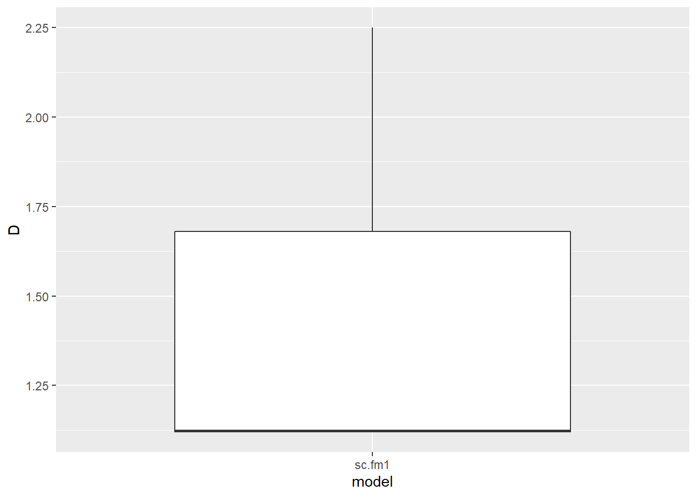
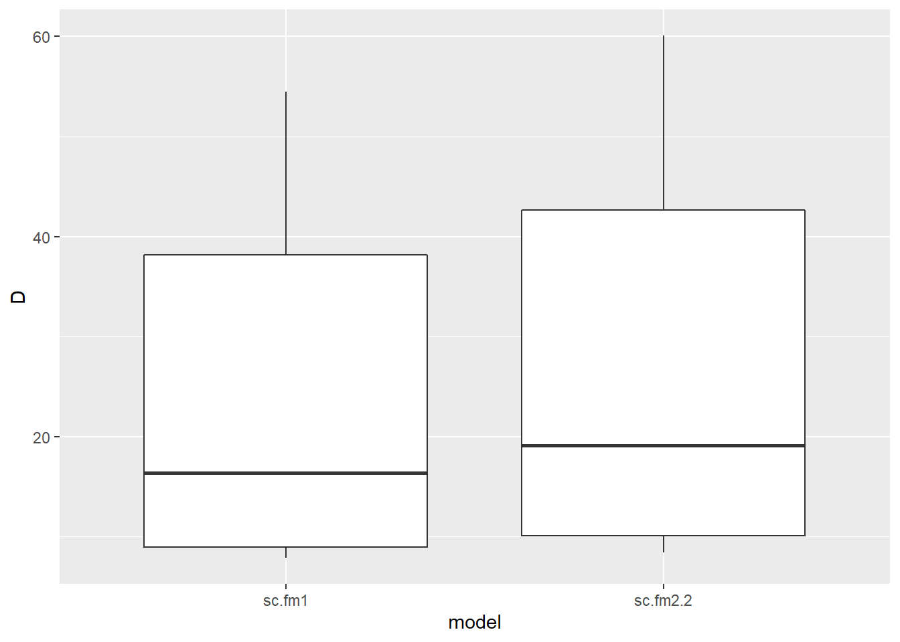
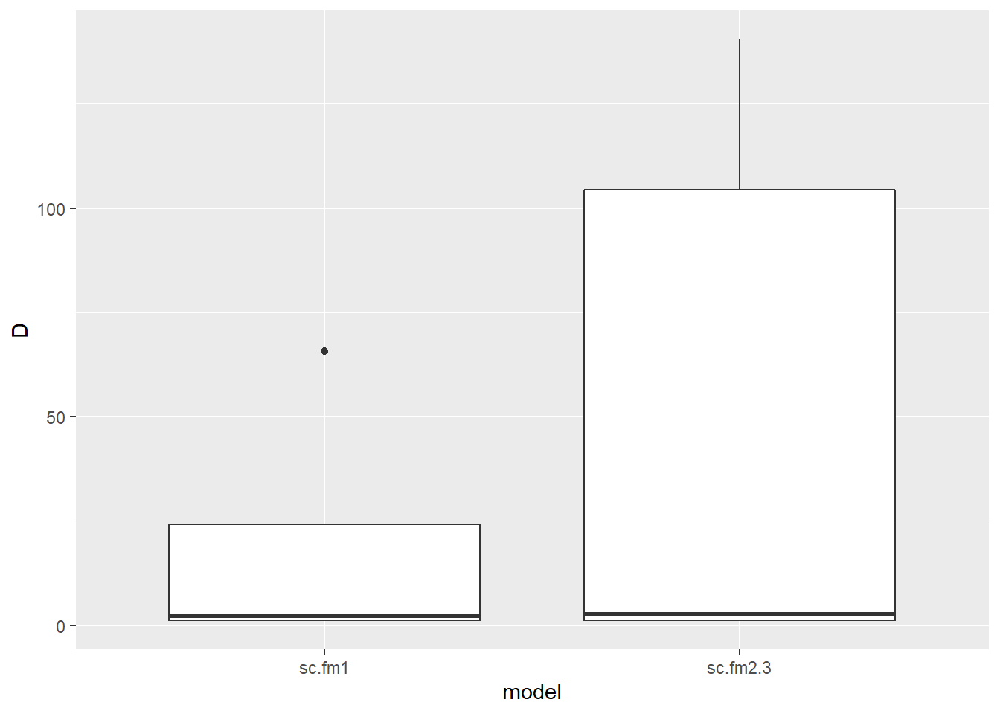
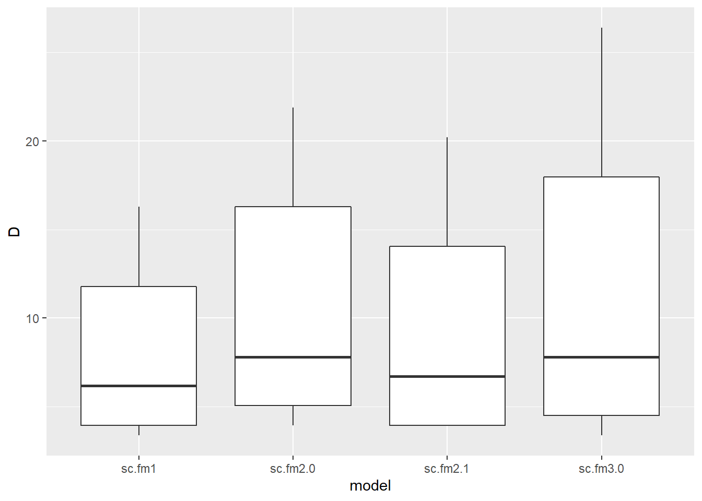
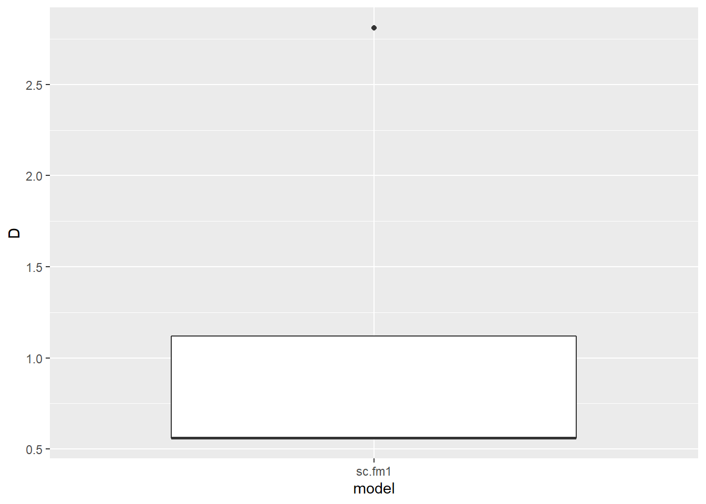
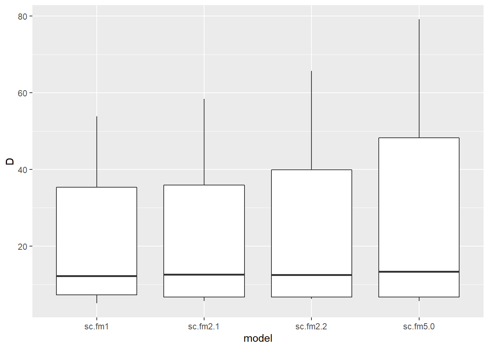

Models evaluated:
| model | description |
|---|---|
| sc.fm1 | dot model |
| sc.fm2.0 | lure |
| sc.fm2.1 | snow |
| sc.fm2.2 | temp |
| sc.fm2.3 | pass |
| sc.fm3.0 | lure + snow |
| sc.fm3.1 | lure + pass |
| sc.fm4.0 | lure + snow + temp |
| sc.fm4.2 | lure + snow + temp + pass |
| sc.fm5.0 | lure + snow + temp + pass + temp * snow |
| sc.fm5.1 | lure + snow + temp + pass + lure * snow |
model metadata:
| survey | n_sites | detections | rep_period | model_aggragate_reps | state_buffer | iterations | burnin | thin | sigma.mean | sigma.sd |
|---|---|---|---|---|---|---|---|---|---|---|
| Ritter Range | 32 | 19 | 7 days | 300 | 2.5 | 350000 | 20000 | 20 | 2.3 | 0.268 |
global models:
| model | covs | bayes_p_val | bayes_factor | revMCMC_constrained | revMCMC_unconstrained | revMCMC_noInteractions |
|---|---|---|---|---|---|---|
| sc.fm5.0 | lure | 0.08331 | 1.791 | 0.00236 | 0.0019394 | 0.0037576 |
| sc.fm5.0 | snow | 0.07285 | 1.429 | 0.00182 | 0.0019394 | 0.0029697 |
| sc.fm5.0 | temp | 0.00406 | 45.306 | 0.00297 | 0.0045455 | 0.0064848 |
| sc.fm5.0 | pass | 0.51039 | 0.385 | 0 | 0.0010909 | 0.0000000 |
| sc.fm5.0 | temp*snow | 0.93501 | 0.126 | 0 | 0.0007273 | NA |
| sc.fm5.1 | lure | 0.0402 | 4.417 | 0.00236 | 0.0019394 | 0.0037576 |
| sc.fm5.1 | snow | 0.27191 | 0.457 | 0.00182 | 0.0019394 | 0.0029697 |
| sc.fm5.1 | temp | 0.00461 | 39.705 | 0.00297 | 0.0045455 | 0.0064848 |
| sc.fm5.1 | pass | 0.49187 | 0.415 | 0 | 0.0010909 | 0.0000000 |
| sc.fm5.1 | lure*snow | 0.88691 | 0.141 | 0 | 0.0016364 | NA |
single covariate models:
| model | covs | bayes_p_val | bayes_factor | revMCMC_constrained | revMCMC_unconstrained | revMCMC_noInteractions |
|---|---|---|---|---|---|---|
| sc.fm2.0 | lure | 0.24904 | 0.465 | 0.00236 | 0.0019394 | 0.0037576 |
| sc.fm2.1 | snow | 0.1976 | err | 0.00182 | 0.0019394 | 0.0029697 |
| sc.fm2.2 | temp | 0.1196 | err | 0.00297 | 0.0045455 | 0.0064848 |
| sc.fm2.3 | pass | 0.99709 | 0.177 | 0 | 0.0010909 | 0.0000000 |
All models: Covariates with p values below .11 (bayesian p, probability covariate is not null)
| model | covs | bayes_p_val | bayes_factor | revMCMC_constrained | revMCMC_unconstrained | revMCMC_noInteractions |
|---|---|---|---|---|---|---|
| sc.fm4.2 | temp | 0.00248 | 52.294 | 0.00297 | 0.0045455 | 0.0064848 |
| sc.fm4.0 | temp | 0.00291 | err | 0.00297 | 0.0045455 | 0.0064848 |
| sc.fm5.0 | temp | 0.00406 | 45.306 | 0.00297 | 0.0045455 | 0.0064848 |
| sc.fm5.1 | temp | 0.00461 | 39.705 | 0.00297 | 0.0045455 | 0.0064848 |
| sc.fm4.2 | snow | 0.02103 | 5.107 | 0.00182 | 0.0019394 | 0.0029697 |
| sc.fm5.1 | lure | 0.0402 | 4.417 | 0.00236 | 0.0019394 | 0.0037576 |
| sc.fm4.0 | snow | 0.04719 | err | 0.00182 | 0.0019394 | 0.0029697 |
| sc.fm4.2 | lure | 0.06244 | 2.404 | 0.00236 | 0.0019394 | 0.0037576 |
| sc.fm5.0 | snow | 0.07285 | 1.429 | 0.00182 | 0.0019394 | 0.0029697 |
| sc.fm4.0 | lure | 0.08283 | err | 0.00236 | 0.0019394 | 0.0037576 |
| sc.fm5.0 | lure | 0.08331 | 1.791 | 0.00236 | 0.0019394 | 0.0037576 |
parameter support:
| level | support | covariates |
|---|---|---|
| good | pval and rev MCMC | |
| moderate | pval or rev MCMC | |
| poor | neither | lure - snow - temp - pass - snow*temp - lure*snow |
models with significant covariates:
waic:
| model | description | WAIC |
|---|---|---|
| sc.fm1 | dot model | 172.1906 |
Density per 100km, significant models:
## Warning: The `x` argument of `as_tibble.matrix()` must have column names if `.name_repair` is omitted as of tibble 2.0.0.
## Using compatibility `.name_repair`.
## This warning is displayed once every 8 hours.
## Call `lifecycle::last_warnings()` to see where this warning was generated.
top models density per 100sq km, significant covariates:
| species | model | covs | n_effective | mode | hdi_89pct_lower | hdi_89pct_upper |
|---|---|---|---|---|---|---|
| AmericanBlackBear | sc.fm1 | D | 11201 | 1.123 | 1.12 | 2.25 |
notes:
lure and snow are on the borderline of significant, but seem to have overall thin support,
suspisious behavior of output distribution of n and density, multiple declining
peaks, not a smooth curve. could be poor convergence, maybe due to hibernation, seasonal migration..?
model metadata:
| survey | n_sites | detections | rep_period | model_aggragate_reps | state_buffer | iterations | burnin | thin | sigma.mean | sigma.sd |
|---|---|---|---|---|---|---|---|---|---|---|
| Ritter Range | 32 | 88 | 7 days | 300 | 2.5 | 350000 | 20000 | 20 | 0.765 | 0.13 |
global models:
| model | covs | bayes_p_val | bayes_factor | revMCMC_constrained | revMCMC_unconstrained | revMCMC_noInteractions |
|---|---|---|---|---|---|---|
| sc.fm5.0 | lure | 0.6698 | 0.072 | 0.00042 | 0.0008485 | 0.0007273 |
| sc.fm5.0 | snow | 0.42675 | 0.096 | 0.00024 | 0.0002424 | 0.0006061 |
| sc.fm5.0 | temp | 0.00566 | 11.730 | 0.00624 | 0.0075152 | 0.0115758 |
| sc.fm5.0 | pass | 0.93308 | 0.137 | 0 | 0.0006667 | 0.0000000 |
| sc.fm5.0 | temp*snow | 0.32976 | 0.166 | 0 | 0.0006667 | NA |
| sc.fm5.1 | lure | 0.02554 | 2.474 | 0.00042 | 0.0008485 | 0.0007273 |
| sc.fm5.1 | snow | 0.08009 | 0.557 | 0.00024 | 0.0002424 | 0.0006061 |
| sc.fm5.1 | temp | 0.00433 | 10.601 | 0.00624 | 0.0075152 | 0.0115758 |
| sc.fm5.1 | pass | 0.9898 | 0.125 | 0 | 0.0006667 | 0.0000000 |
| sc.fm5.1 | lure*snow | 0.00721 | 5.798 | 0 | 0.0006667 | NA |
single covariate models:
| model | covs | bayes_p_val | bayes_factor | revMCMC_constrained | revMCMC_unconstrained | revMCMC_noInteractions |
|---|---|---|---|---|---|---|
| sc.fm2.0 | lure | 0.44083 | 0.104 | 0.00042 | 0.0008485 | 0.0007273 |
| sc.fm2.1 | snow | 0.8944 | 0.040 | 0.00024 | 0.0002424 | 0.0006061 |
| sc.fm2.2 | temp | 0.02981 | 1.682 | 0.00624 | 0.0075152 | 0.0115758 |
| sc.fm2.3 | pass | 0.86377 | 0.119 | 0 | 0.0006667 | 0.0000000 |
All models: Covariates with p values below .11 (bayesian p, probability covariate is not null)
| model | covs | bayes_p_val | bayes_factor | revMCMC_constrained | revMCMC_unconstrained | revMCMC_noInteractions |
|---|---|---|---|---|---|---|
| sc.fm5.1 | temp | 0.00433 | 10.601 | 0.00624 | 0.0075152 | 0.0115758 |
| sc.fm5.0 | temp | 0.00566 | 11.730 | 0.00624 | 0.0075152 | 0.0115758 |
| sc.fm5.1 | lure*snow | 0.00721 | 5.798 | 0 | 0.0006667 | NA |
| sc.fm4.2 | temp | 0.01068 | 3.595 | 0.00624 | 0.0075152 | 0.0115758 |
| sc.fm4.0 | temp | 0.01207 | 4.700 | 0.00624 | 0.0075152 | 0.0115758 |
| sc.fm5.1 | lure | 0.02554 | 2.474 | 0.00042 | 0.0008485 | 0.0007273 |
| sc.fm2.2 | temp | 0.02981 | 1.682 | 0.00624 | 0.0075152 | 0.0115758 |
| sc.fm5.1 | snow | 0.08009 | 0.557 | 0.00024 | 0.0002424 | 0.0006061 |
parameter support:
| level | support | covariates |
|---|---|---|
| good | pval and rev MCMC | |
| moderate | pval or rev MCMC | temp |
| poor | neither | lure - snow - pass - snow*temp - lure*snow |
models with significant covariates:
waic:
| model | description | WAIC |
|---|---|---|
| sc.fm2.2 | temp | 539.9674 |
| sc.fm1 | dot model | 546.5134 |
Density per 100km, significant models:

top models density per 100sq km, significant covariates:
| species | model | covs | n_effective | mode | hdi_89pct_lower | hdi_89pct_upper |
|---|---|---|---|---|---|---|
| AmericanMarten | sc.fm2.2 | D | 1043 | 19.136 | 8.42 | 60.08 |
| AmericanMarten | sc.fm2.2 | temp | 16500 | 0.291 | 0.12 | 0.48 |
notes:
moderate to small amount of support for temp
model metadata:
| survey | n_sites | detections | rep_period | model_aggragate_reps | state_buffer | iterations | burnin | thin | sigma.mean | sigma.sd |
|---|---|---|---|---|---|---|---|---|---|---|
| Ritter Range | 32 | 6 | 7 days | 300 | 2.5 | 350000 | 20000 | 20 | 1.175 | 0.14 |
global models:
| model | covs | bayes_p_val | bayes_factor | revMCMC_constrained | revMCMC_unconstrained | revMCMC_noInteractions |
|---|---|---|---|---|---|---|
| sc.fm5.0 | lure | 0.11103 | 4.064 | 0.01315 | 0.0135758 | 0.0201212 |
| sc.fm5.0 | snow | 0.99543 | 0.144 | 0.00097 | 0.0009091 | 0.0014545 |
| sc.fm5.0 | temp | 0.83334 | 0.266 | 0.00121 | 0.0007273 | 0.0013939 |
| sc.fm5.0 | pass | 0.0978 | 5.444 | 0 | 0.0209697 | 0.0000000 |
| sc.fm5.0 | temp*snow | 0.55237 | 0.472 | 0 | 0.0021212 | NA |
| sc.fm5.1 | lure | 0.03254 | 23.447 | 0.01315 | 0.0135758 | 0.0201212 |
| sc.fm5.1 | snow | 0.52128 | 0.595 | 0.00097 | 0.0009091 | 0.0014545 |
| sc.fm5.1 | temp | 0.87765 | 0.288 | 0.00121 | 0.0007273 | 0.0013939 |
| sc.fm5.1 | pass | 0.12582 | 4.177 | 0 | 0.0209697 | 0.0000000 |
| sc.fm5.1 | lure*snow | 0.48466 | 0.713 | 6e-05 | 0.0008485 | NA |
single covariate models:
| model | covs | bayes_p_val | bayes_factor | revMCMC_constrained | revMCMC_unconstrained | revMCMC_noInteractions |
|---|---|---|---|---|---|---|
| sc.fm2.0 | lure | 0.12673 | 3.318 | 0.01315 | 0.0135758 | 0.0201212 |
| sc.fm2.1 | snow | 0.79594 | 0.178 | 0.00097 | 0.0009091 | 0.0014545 |
| sc.fm2.2 | temp | 0.95035 | 0.137 | 0.00121 | 0.0007273 | 0.0013939 |
| sc.fm2.3 | pass | 0.10391 | 6.885 | 0 | 0.0209697 | 0.0000000 |
All models: Covariates with p values below .11 (bayesian p, probability covariate is not null)
| model | covs | bayes_p_val | bayes_factor | revMCMC_constrained | revMCMC_unconstrained | revMCMC_noInteractions |
|---|---|---|---|---|---|---|
| sc.fm5.1 | lure | 0.03254 | 23.447 | 0.01315 | 0.0135758 | 0.0201212 |
| sc.fm5.0 | pass | 0.0978 | 5.444 | 0 | 0.0209697 | 0.0000000 |
| sc.fm3.1 | pass | 0.10035 | 4.363 | 0 | 0.0209697 | 0.0000000 |
| sc.fm2.3 | pass | 0.10391 | 6.885 | 0 | 0.0209697 | 0.0000000 |
| sc.fm4.0 | lure | 0.10419 | 3.568 | 0.01315 | 0.0135758 | 0.0201212 |
parameter support:
| level | support | covariates |
|---|---|---|
| good | pval and rev MCMC | |
| moderate | pval or rev MCMC | pass |
| poor | neither | lure - snow - temp - snow*temp - lure*snow |
models with significant covariates:
waic:
| model | description | WAIC |
|---|---|---|
| sc.fm1 | dot model | 78.02406 |
| sc.fm2.3 | pass | 86.57164 |
Density per 100km, significant models:

top models density per 100sq km, significant covariates:
| species | model | covs | n_effective | mode | hdi_89pct_lower | hdi_89pct_upper |
|---|---|---|---|---|---|---|
| Bobcat | sc.fm1 | D | 323 | 2.203 | 1.12 | 65.7 |
notes:
Dot model wins, probably further support against pass as a cov
moderate to small amount of support for pass, lure has tiny amount of support lean toward rejecting, very
few detections for multiple covs,
model metadata:
| survey | n_sites | detections | rep_period | model_aggragate_reps | state_buffer | iterations | burnin | thin | sigma.mean | sigma.sd |
|---|---|---|---|---|---|---|---|---|---|---|
| Ritter Range | 32 | 43 | 7 days | 300 | 2.5 | 350000 | 20000 | 20 | 0.865 | 0.205 |
global models:
| model | covs | bayes_p_val | bayes_factor | revMCMC_constrained | revMCMC_unconstrained | revMCMC_noInteractions |
|---|---|---|---|---|---|---|
| sc.fm5.0 | lure | 0 | 141.695 | 0.76733 | 0.7723030 | 0.8312121 |
| sc.fm5.0 | snow | 0.00532 | 9.415 | 0.11473 | 0.1120606 | 0.1793333 |
| sc.fm5.0 | temp | 0.03859 | 2.442 | 0.01479 | 0.0133939 | 0.0370303 |
| sc.fm5.0 | pass | 0.99975 | 0.156 | 0 | 0.0027879 | 0.0002424 |
| sc.fm5.0 | temp*snow | 0.65036 | 0.125 | 0 | 0.0023636 | NA |
| sc.fm5.1 | lure | 0 | 280.278 | 0.76733 | 0.7723030 | 0.8312121 |
| sc.fm5.1 | snow | 0.00133 | 30.657 | 0.11473 | 0.1120606 | 0.1793333 |
| sc.fm5.1 | temp | 0.00987 | 7.596 | 0.01479 | 0.0133939 | 0.0370303 |
| sc.fm5.1 | pass | 0.99699 | 0.145 | 0 | 0.0027879 | 0.0002424 |
| sc.fm5.1 | lure*snow | 0.23531 | 0.519 | 0.00248 | 0.0033333 | NA |
single covariate models:
| model | covs | bayes_p_val | bayes_factor | revMCMC_constrained | revMCMC_unconstrained | revMCMC_noInteractions |
|---|---|---|---|---|---|---|
| sc.fm2.0 | lure | 0.00035 | 173.841 | 0.76733 | 0.7723030 | 0.8312121 |
| sc.fm2.1 | snow | 0.00194 | 24.084 | 0.11473 | 0.1120606 | 0.1793333 |
| sc.fm2.2 | temp | 0.33178 | 0.189 | 0.01479 | 0.0133939 | 0.0370303 |
| sc.fm2.3 | pass | 0.58872 | 0.214 | 0 | 0.0027879 | 0.0002424 |
All models: Covariates with p values below .11 (bayesian p, probability covariate is not null)
| model | covs | bayes_p_val | bayes_factor | revMCMC_constrained | revMCMC_unconstrained | revMCMC_noInteractions |
|---|---|---|---|---|---|---|
| sc.fm4.0 | lure | 0 | 198.074 | 0.76733 | 0.7723030 | 0.8312121 |
| sc.fm5.0 | lure | 0 | 141.695 | 0.76733 | 0.7723030 | 0.8312121 |
| sc.fm5.1 | lure | 0 | 280.278 | 0.76733 | 0.7723030 | 0.8312121 |
| sc.fm2.0 | lure | 0.00035 | 173.841 | 0.76733 | 0.7723030 | 0.8312121 |
| sc.fm3.1 | lure | 0.00037 | 204.154 | 0.76733 | 0.7723030 | 0.8312121 |
| sc.fm4.2 | lure | 0.00108 | 78.070 | 0.76733 | 0.7723030 | 0.8312121 |
| sc.fm4.2 | snow | 0.00126 | 32.861 | 0.11473 | 0.1120606 | 0.1793333 |
| sc.fm5.1 | snow | 0.00133 | 30.657 | 0.11473 | 0.1120606 | 0.1793333 |
| sc.fm4.0 | snow | 0.0015 | 24.163 | 0.11473 | 0.1120606 | 0.1793333 |
| sc.fm3.0 | lure | 0.0019 | 61.870 | 0.76733 | 0.7723030 | 0.8312121 |
| sc.fm2.1 | snow | 0.00194 | 24.084 | 0.11473 | 0.1120606 | 0.1793333 |
| sc.fm5.0 | snow | 0.00532 | 9.415 | 0.11473 | 0.1120606 | 0.1793333 |
| sc.fm3.0 | snow | 0.00623 | 7.616 | 0.11473 | 0.1120606 | 0.1793333 |
| sc.fm5.1 | temp | 0.00987 | 7.596 | 0.01479 | 0.0133939 | 0.0370303 |
| sc.fm4.2 | temp | 0.01978 | 5.396 | 0.01479 | 0.0133939 | 0.0370303 |
| sc.fm4.0 | temp | 0.0205 | 4.228 | 0.01479 | 0.0133939 | 0.0370303 |
| sc.fm5.0 | temp | 0.03859 | 2.442 | 0.01479 | 0.0133939 | 0.0370303 |
parameter support:
| level | support | covariates |
|---|---|---|
| good | pval and rev MCMC | lure |
| moderate | pval or rev MCMC | snow |
| poor | neither | temp - pass - snow*temp - lure*snow |
models with significant covariates:
waic:
| model | description | WAIC |
|---|---|---|
| sc.fm3.0 | lure + snow | 292.9536 |
| sc.fm2.0 | lure | 299.8385 |
| sc.fm2.1 | snow | 302.0749 |
| sc.fm1 | dot model | 312.3275 |
Density per 100km, significant models:

top models density per 100sq km, significant covariates:
| species | model | covs | n_effective | mode | hdi_89pct_lower | hdi_89pct_upper |
|---|---|---|---|---|---|---|
| Coyote | sc.fm3.0 | D | 1100 | 7.790 | 3.37 | 26.39 |
| Coyote | sc.fm3.0 | lure | 16500 | -0.977 | -1.55 | -0.54 |
| Coyote | sc.fm3.0 | snow | 16500 | 0.470 | 0.23 | 0.72 |
notes:
notes:
model did not converge
maybe a lack of spatial dependance
modeled sigma around .12 km
model metadata:
| survey | n_sites | detections | rep_period | model_aggragate_reps | state_buffer | iterations | burnin | thin | sigma.mean | sigma.sd |
|---|---|---|---|---|---|---|---|---|---|---|
| Ritter Range | 32 | 3 | 7 days | 300 | 2.5 | 350000 | 20000 | 20 | 1 | 0.14 |
global models:
| model | covs | bayes_p_val | bayes_factor | revMCMC_constrained | revMCMC_unconstrained | revMCMC_noInteractions |
|---|---|---|---|---|---|---|
| sc.fm5.0 | lure | 0.96052 | 0.288 | 0.00164 | 0.0022424 | 0.0041818 |
| sc.fm5.0 | snow | 0.51931 | 1.958 | 0.00976 | 0.0298182 | 0.1090909 |
| sc.fm5.0 | temp | 0.39187 | 2.799 | 0.00903 | 0.0252121 | 0.1070909 |
| sc.fm5.0 | pass | 0.33493 | 105.59 | 0.00073 | 0.3466061 | 0.0858788 |
| sc.fm5.0 | temp*snow | 0.70796 | 1.394 | 0.00024 | 0.1620000 | NA |
| sc.fm5.1 | lure | 0.72262 | 1.21 | 0.00164 | 0.0022424 | 0.0041818 |
| sc.fm5.1 | snow | 0.00539 | 139.926 | 0.00976 | 0.0298182 | 0.1090909 |
| sc.fm5.1 | temp | 0.01073 | 159.438 | 0.00903 | 0.0252121 | 0.1070909 |
| sc.fm5.1 | pass | 0.36614 | 49.485 | 0.00073 | 0.3466061 | 0.0858788 |
| sc.fm5.1 | lure*snow | 0.54308 | 1.25 | 0.00073 | 0.0027879 | NA |
single covariate models:
| model | covs | bayes_p_val | bayes_factor | revMCMC_constrained | revMCMC_unconstrained | revMCMC_noInteractions |
|---|---|---|---|---|---|---|
| sc.fm2.0 | lure | 0.95165 | 0.21 | 0.00164 | 0.0022424 | 0.0041818 |
| sc.fm2.1 | snow | 0.22818 | 1.157 | 0.00976 | 0.0298182 | 0.1090909 |
| sc.fm2.2 | temp | 0.33029 | 0.766 | 0.00903 | 0.0252121 | 0.1070909 |
| sc.fm2.3 | pass | 0.34389 | 94.176 | 0.00073 | 0.3466061 | 0.0858788 |
All models: Covariates with p values below .11 (bayesian p, probability covariate is not null)
| model | covs | bayes_p_val | bayes_factor | revMCMC_constrained | revMCMC_unconstrained | revMCMC_noInteractions |
|---|---|---|---|---|---|---|
| sc.fm5.1 | snow | 0.00539 | 139.926 | 0.00976 | 0.0298182 | 0.1090909 |
| sc.fm4.0 | snow | 0.00908 | 66.354 | 0.00976 | 0.0298182 | 0.1090909 |
| sc.fm4.2 | snow | 0.01071 | 67.149 | 0.00976 | 0.0298182 | 0.1090909 |
| sc.fm5.1 | temp | 0.01073 | 159.438 | 0.00903 | 0.0252121 | 0.1070909 |
| sc.fm4.0 | temp | 0.01583 | 81.04 | 0.00903 | 0.0252121 | 0.1070909 |
| sc.fm4.2 | temp | 0.01694 | 105.938 | 0.00903 | 0.0252121 | 0.1070909 |
parameter support:
| level | support | covariates |
|---|---|---|
| good | pval and rev MCMC | |
| moderate | pval or rev MCMC | |
| poor | neither | lure - snow - temp - pass - snow*temp - lure*snow |
models with significant covariates:
waic:
| model | description | WAIC |
|---|---|---|
| sc.fm1 | dot model | 32.60312 |
Density per 100km, significant models:

top models density per 100sq km, significant covariates:
| species | model | covs | n_effective | mode | hdi_89pct_lower | hdi_89pct_upper |
|---|---|---|---|---|---|---|
| RedFox | sc.fm1 | D | 466 | 0.561 | 0.56 | 2.81 |
notes:
3 detecions, not much power
model metadata:
| survey | n_sites | detections | rep_period | model_aggragate_reps | state_buffer | iterations | burnin | thin | sigma.mean | sigma.sd |
|---|---|---|---|---|---|---|---|---|---|---|
| Ritter Range | 32 | 104 | 7 days | 300 | 2.5 | 350000 | 20000 | 20 | 0.322 | 0.094 |
global models:
| model | covs | bayes_p_val | bayes_factor | revMCMC_constrained | revMCMC_unconstrained | revMCMC_noInteractions |
|---|---|---|---|---|---|---|
| sc.fm5.0 | lure | 0.85773 | 0.066 | 0.00242 | 0.0015152 | 0.0021212 |
| sc.fm5.0 | snow | 0.01017 | 4.552 | 1 | 0.0968485 | 0.0010303 |
| sc.fm5.0 | temp | 0 | 9132.349 | 1 | 0.9878182 | 0.6446061 |
| sc.fm5.0 | pass | 0.95576 | 0.224 | 0 | 0.0054545 | 0.0000000 |
| sc.fm5.0 | temp*snow | 0 | 483981.916 | 1 | 1.0000000 | NA |
| sc.fm5.1 | lure | 0.70985 | 0.061 | 0.00242 | 0.0015152 | 0.0021212 |
| sc.fm5.1 | snow | 0.92357 | 0.039 | 1 | 0.0968485 | 0.0010303 |
| sc.fm5.1 | temp | 0 | 115.292 | 1 | 0.9878182 | 0.6446061 |
| sc.fm5.1 | pass | 0.82014 | 0.229 | 0 | 0.0054545 | 0.0000000 |
| sc.fm5.1 | lure*snow | 0.05739 | 0.716 | 0 | 0.0025455 | NA |
single covariate models:
| model | covs | bayes_p_val | bayes_factor | revMCMC_constrained | revMCMC_unconstrained | revMCMC_noInteractions |
|---|---|---|---|---|---|---|
| sc.fm2.0 | lure | 0.9542 | 0.041 | 0.00242 | 0.0015152 | 0.0021212 |
| sc.fm2.1 | snow | 0.93151 | 0.035 | 1 | 0.0968485 | 0.0010303 |
| sc.fm2.2 | temp | 0 | 72.455 | 1 | 0.9878182 | 0.6446061 |
| sc.fm2.3 | pass | 0.74913 | 0.250 | 0 | 0.0054545 | 0.0000000 |
All models: Covariates with p values below .11 (bayesian p, probability covariate is not null)
| model | covs | bayes_p_val | bayes_factor | revMCMC_constrained | revMCMC_unconstrained | revMCMC_noInteractions |
|---|---|---|---|---|---|---|
| sc.fm2.2 | temp | 0 | 72.455 | 1 | 0.9878182 | 0.6446061 |
| sc.fm4.2 | temp | 0 | 437.260 | 1 | 0.9878182 | 0.6446061 |
| sc.fm5.0 | temp | 0 | 9132.349 | 1 | 0.9878182 | 0.6446061 |
| sc.fm5.0 | temp*snow | 0 | 483981.916 | 1 | 1.0000000 | NA |
| sc.fm5.1 | temp | 0 | 115.292 | 1 | 0.9878182 | 0.6446061 |
| sc.fm4.0 | temp | 0.00039 | 247.435 | 1 | 0.9878182 | 0.6446061 |
| sc.fm5.0 | snow | 0.01017 | 4.552 | 1 | 0.0968485 | 0.0010303 |
| sc.fm5.1 | lure*snow | 0.05739 | 0.716 | 0 | 0.0025455 | NA |
parameter support:
| level | support | covariates |
|---|---|---|
| good | pval and rev MCMC | snow - temp- snow*temp |
| moderate | pval or rev MCMC | |
| poor | neither | lure - pass - lure*snow |
models with significant covariates:
waic:
| model | description | WAIC |
|---|---|---|
| sc.fm5.0 | lure + snow + temp + pass + temp * snow | 502.8138 |
| sc.fm2.2 | temp | 543.4455 |
| sc.fm1 | dot model | 557.3899 |
| sc.fm2.1 | snow | 561.0120 |
Density per 100km, significant models:

top models density per 100sq km, significant covariates:
| species | model | covs | n_effective | mode | hdi_89pct_lower | hdi_89pct_upper |
|---|---|---|---|---|---|---|
| WhiteTailedJackrabbit | sc.fm5.0 | D | 256 | 13.374 | 5.61 | 79.17 |
| WhiteTailedJackrabbit | sc.fm5.0 | lure | 16500 | -0.084 | -0.35 | 0.15 |
| WhiteTailedJackrabbit | sc.fm5.0 | snow | 16500 | 0.467 | 0.21 | 0.70 |
| WhiteTailedJackrabbit | sc.fm5.0 | temp*snow | 16500 | 1.103 | 0.85 | 1.41 |
notes:
need to run snow + temp + temp*snow
vals are temp from the global model, including lure and pass..
n effective is not great, could be not converging well,
possibly poor trap dependence, modeled sigma is around .35 km
## Warning: Unknown or uninitialised column: `year`.
## Warning: Unknown or uninitialised column: `year`.